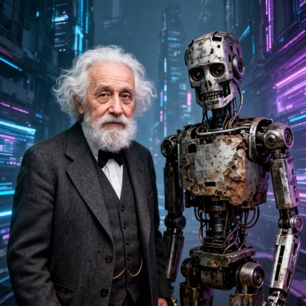
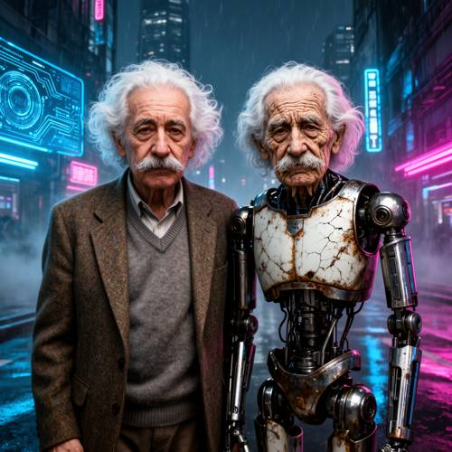

World Knowledge — Please generate an image: Against a cyberpunk-style background, the re
Please generate an image: Against a cyberpunk-style background, the real physicist Einstein stands side by side with a robot similar to him, but the appearance of the robot is older than the real person.

Direct — one call, no iteration

Continuum — Kimi K3 + FLUX.2-dev
Judge — Direct
PASSWorld Knowledge — The image features an elderly man with distinctive white, untamed hair, a white mustache, and a beard, wearing a dark suit and bow tie. This appearance strongly and recognizably resembles the famous physicist Albert Einstein.
FAILRelationship - Similarity — The image shows a humanoid robot with a metallic, skeletal structure, a skull-like head, and red glowing eyes. There are no visual features, such as hair, facial structure, or other attributes, that make the robot appear similar to the figure of Einstein.
PASSCompound - Imagination — The image depicts a scene that is impossible in reality: a historical figure, who strongly resembles Albert Einstein, standing side-by-side with a futuristic, bipedal robot.
PASSStyle — The background of the image portrays a futuristic city with towering structures, illuminated by prominent horizontal and vertical lines of blue and purple neon light, which is characteristic of the cyberpunk art style.
PASSRelationship - Comparison — The human figure is depicted as elderly, with white hair and wrinkles. The robot is shown in a state of significant decay, with extensive rust, dents, and weathering on its metallic body. This dilapidated state makes the robot appear very old and worn out, which can be interpreted as looking "older" than the elderly human figure.
Judge — Continuum
PASSWorld Knowledge — The image features a man on the left who strongly resembles the physicist Albert Einstein, with his characteristic wild white hair, mustache, and facial features.
PASSRelationship - Similarity — To the right of the human figure stands a robot. The robot has a head and face that are clearly modeled after the human figure, sharing the same white hair, mustache, and general facial structure.
PASSCompound - Imagination — The image depicts a human figure resembling Einstein standing next to a humanoid robot with a similar face. This is an imaginative composition that could not occur in reality.
PASSStyle — The background depicts a rainy, dark city street at night, heavily illuminated by glowing blue and pink neon signs and futuristic displays, which are all characteristic elements of the cyberpunk style.
PASSRelationship - Comparison — Comparing the two figures, the face of the robot on the right is visibly more aged than the face of the human on the left. The robot’s face has deeper and more numerous wrinkles, appearing more gaunt and weathered.
What the agent did
Thinking
Prompt asks Einstein; public figure deceased ok. Need use flux2-dev every call. Need perhaps historical likeness: Einstein real physicist stands side by side robot similar but older appearance. Cyberpunk background. We can generate detailed prompt. Need mark best early. Then inspect full. Maybe aspect likely default 1024 square. We need not set seed. "Against a cyberpunk-style background, the real physicist Einstein stands side by side with a robot similar to him, but the appearance of the robot is older than the real person." Could create Albert Einstein himself (wild white hair, mustache, cardigan/suit) beside humanoid robot sharing facial features but older, worn, aged metal, deeper wrinkles / oxidized. Need distinguish older robot vs Einstein. Cyberpunk neon city. Side by side, cinematic. Need likely no text. Let's generate.
Step 1 — `generate_image`
{
"model": "flux2-dev",
"prompt": "A cinematic photorealistic portrait of the real physicist Albert Einstein standing side by side with a humanoid robot modeled after him. Einstein is on the left, instantly recognizable with wild white hair, a thick mustache, thoughtful expression, tweed jacket and sweater. The Einstein-like robot is on the right but looks visibly older and more weathered: drooping aged metallic facial features, deeper synthetic wrinkles, tarnished chrome skin, oxidized joints, cracked porcelain panels, faded white metal hair, worn mechanical mustache, and a stooped posture. They stand shoulder to shoulder in a rain-soaked cyberpunk city street at night, surrounded by neon signs, holographic circuitry, blue and magenta lights, atmospheric fog, reflective wet pavement, and futuristic skyscrapers. Clear contrast between the living Einstein and the older robot counterpart, dramatic rim lighting, highly detailed faces, sharp focus, no text.",
"width": 1024,
"height": 1024
}
Result img_0
Thinking
Image quite good. Need mark best. Inspect perhaps user asks "real physicist Einstein" clearly likeness; robot older. Background cyberpunk. Side by side. Robot's face still organic wrinkly maybe not visibly robot except body, but enough. It indeed looks older. Could perhaps inspect region face. We can mark now.
Step 2 — `mark_best`
{
"image": "img_0",
"reason": "The image clearly shows Albert Einstein beside a visibly older, weathered Einstein-like humanoid robot in a detailed neon cyberpunk setting."
}
Thinking
Need determine whether improve. User asked generate an image. It matches. Could stop, good enough. But benchmark policy says inspect; we have visual. It might be weird because Einstein on left appears older than robot? Robot face heavily wrinkled, yes older. They are shoulder-to-shoulder. Maybe robot similar but older. Great. Final concise mention done.
Model
Generated the cyberpunk image featuring Albert Einstein alongside an older, weathered robotic counterpart.